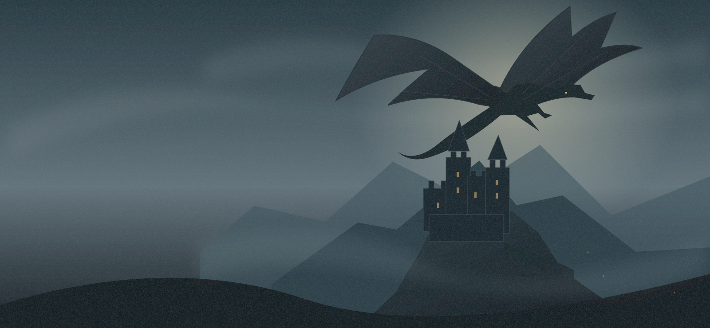

01 /GAME OF THRONES
Characters · 10 questions
Which GoT Character Are You?
Find the character behind your instincts.
Take the quiz
Discover your house. Find your dragon. Choose your allegiance. Eight quizzes to reveal the Westerosi in you.
Free to play · About 3 minutes each · No signup
Go with your gut. Question your loyalties.
Then send the result to your small council.
Showing 8 quizzes.
Find the character behind your instincts.
Take the quizYour place at the small council awaits.
Take the quizTwo banners. Where does your loyalty lie?
Take the quizMeet your match among three dragons.
Take the quizFind the dragon that matches your spirit.
Take the quizOne family name. Many kinds of fire.
Take the quizEight great houses. One that feels like you.
Take the quizRaise your banner in an earlier Westeros.
Take the quizCharacters, houses, dragons, or allegiance. Follow your curiosity.
Ten original scenarios. No trivia to memorize. No wrong answers.
Meet your match, save your result card, and compare with friends.
Personality quizzes. Your preferences and decisions shape the result. You do not need to remember dates, family trees, or episode details.
No. These quizzes are inspired by the television worlds and avoid book-only plot reveals. Names, general personalities, houses, and the central Blacks-versus-Greens conflict are referenced.
The dragon names come from the shows; the rider styles and compatibility descriptions are playful fan interpretations. Results do not predict canon bonds or claim to reproduce official dragon personalities.
No. House belonging and allegiance are separate quizzes with separate questions. A Targaryen house result, for example, does not determine whether you join the Blacks or the Greens.
Each answer awards affinity points. Totals are adjusted for how many points each result can earn, then ranked. Ties are identified on the result screen. Read the scoring explanation for details.